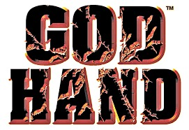

Dahulu ada sebuah klan tertinggi bernama God Hand, klan tersebut bertugas untuk melindungi dua tangan God Hand dari serangan para iblis. Mereka mengincar dan ingin mencuri tangan God Hand yang memiliki kekuatan besar. Ketua dari klan God Hand ini memiliki anak perempuan bernama Olivia yang terpaksa untuk menerima lamaran dari Azel. Akhirnya mereka pun bertunangan. Namun ternyata, Azel mengkhianati Olivia dan juga klan God Hand. Ia mencuri tangan kiri God Hand dan menghancurkan markas klan God Hand. Olivia pun dipercaya oleh ayahnya untuk membawa pergi tangan kanan God Hand ke tempat yang aman. Orang tua Olivia mati terbunuh oleh tragedy itu. Sedangkan Azel akhirnya bergabung dengan klan iblis bernama Four Devas yang beranggotakan Azel, Belze, Elvis, dan Shannon. Sedangkan misi klan iblis ini adalah ingin membangkitkan kembali Anggra yang sudah lama tersegel dan harus terbuka dengan menggunakan God Hand. Jika Anggra berhasil bangkit kembali maka klan iblis dapat menguasai dunia dengan kekuatan Anggra, serta menghapuskan peradaban manusia dari bumi. 3 tahun kemudian, klan iblis mulai membuat kekacauan dan menghancurkan dunia. Olivia pun di incar dan akan di bunuh namun dating seorang pemuda yang menolongnya. Pria muda tersebut bernama Gene, ia berhasil membuat Olivia kabur dari 2 iblis tersebut. Sedangkan Gene harus berhadapan dengan mereka, ia terlihat kesulitan bahkan tangan kanannya pun terpotong. Beruntungnya kedua iblis itu tidak membunuh Gene, setelah memotong tangan kanan Gene, mereka pun pergi meninggalkannya.

God Hand

UP